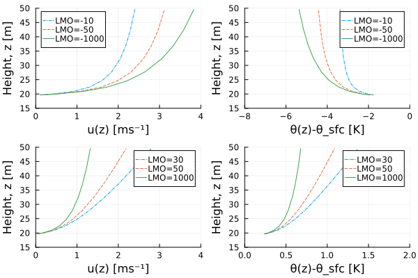
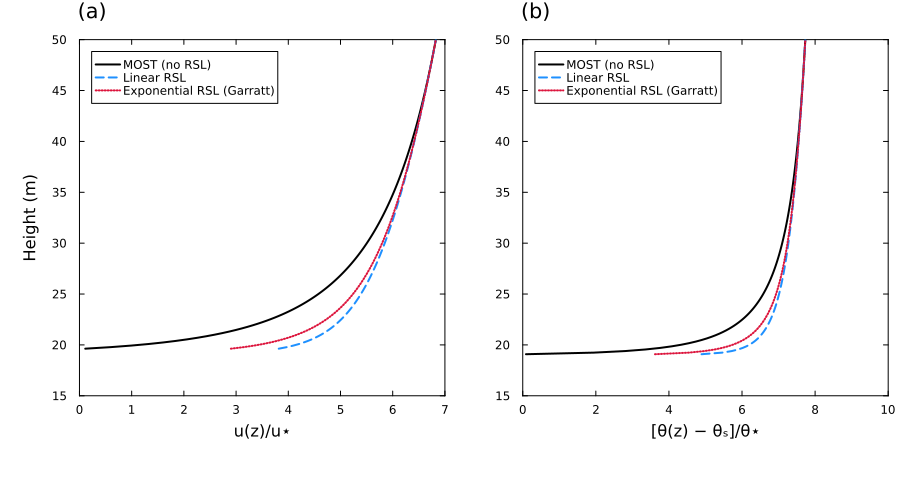

Surface Fluxes Theory
SurfaceFluxes.jl calculates turbulent surface fluxes using Monin-Obukhov Similarity Theory (MOST). This theory allows us to estimate the fluxes of momentum, heat, and moisture from the mean vertical gradients of wind speed, potential temperature, and specific humidity in the surface layer.
Monin-Obukhov Similarity Theory
The central hypothesis of MOST is that in the surface layer, turbulent fluxes are approximately constant with height and characterized by a single length scale, the Obukhov length ($L$), defined as
\[ L = - \frac{u_*^3}{\kappa B},\]
with
- the friction velocity (scaling velocity) $u_*$,
- the von Kármán constant ($\kappa \approx 0.4$), and
- the surface buoyancy flux $B$.
The Obukhov length $L$ is a length scale [m] that characterizes the stability of the surface layer:
- Neutral ($L \to \infty$): Shear production of turbulence dominates ($B \to 0$).
- Stable ($L > 0$): Surface cooling, turbulence is suppressed by negative buoyancy ($B < 0$).
- Unstable ($L < 0$): Surface heating, turbulence is generated by positive buoyancy ($B > 0$).
The dimensionless stability parameter $\zeta$ is defined as
\[ \zeta = \frac{z - d}{L},\]
where $z$ is the height above the surface and $d$ is the displacement height. In stable conditions, $L > 0$ and $\zeta > 0$, while in unstable conditions, $L < 0$ and $\zeta < 0$. The displacement height $d$ is a parameter that accounts for the apparent upward "displacement" of the surface due to roughness elements (e.g., vegetation, buildings, etc.)
Similarity Relations
The vertical gradients of mean variables are related to their surface fluxes through universal stability functions $(\phi_m, \phi_h)$,
\[ \frac{\kappa (z-d)}{u_*} \frac{\partial u}{\partial z} = \phi_m(\zeta)\]
and
\[ \frac{\kappa (z-d)}{\theta_*} \frac{\partial \theta}{\partial z} = \phi_h(\zeta),\]
where $\theta_*$ is the potential temperature scale. Similar relations hold for specific humidity ($q$) and other scalars.
Integrating these relations yields the profiles for wind speed and potential temperature, which are used to relate surface values to interior values (at height $\Delta z$).
The Iterative Solver
The core problem in SurfaceFluxes.jl is to find the stability parameter $\zeta$ that satisfies the MOST relations given the atmospheric state (wind speed difference $\Delta U$ between interior and surface, virtual potential temperature difference $\Delta \theta_v$, etc.).
Since $L$ depends on the fluxes (via $u_*$ and $B$), and the fluxes depend on $L$ (via the profiles), this requires an iterative solution.
Bulk Richardson Number
The solver uses the Bulk Richardson Number ($Ri_b$) as a constraint. In terms of state variables, $Ri_b$ is defined as
\[ Ri_b(\text{state}) = \frac{g \Delta z_{\text{eff}} \Delta \theta_v}{\theta_{v,\text{ref}} (\Delta U)^2},\]
where $\theta_v$ is the virtual potential temperature. The bulk Richardson number $Ri_b$ is a dimensionless quantity that characterizes the stability of the surface layer. In stable conditions, $Ri_b > 0$, while in unstable conditions, $Ri_b < 0$.
Theoretical analysis shows that $Ri_b$ is universally related to $\zeta$:
\[ Ri_b(\zeta) = \zeta \frac{F_h(\zeta)}{F_m(\zeta)^2}.\]
Here, $F_m$ and $F_h$ are the dimensionless vertical profiles for momentum and heat (derived from $\phi_m$ and $\phi_h$). For typical geometries, the bulk Richardson number $Ri_b(\zeta)$ is a monotonic function of $\zeta$, enabling a robust and efficient root-finding algorithm; exceptions occur for layer averages over layers only a few roughness lengths deep.
Iterative Solver (Bracketed Regula Falsi)
The function surface_fluxes uses a two-stage bracketed solver (via RootSolvers.jl's RegulaFalsiMethod, Illinois variant) to find the root $\zeta$ of the equation
\[ Ri_b(\zeta) - Ri_b(\text{state}) = 0.\]
First, the residual at neutral stability ($\zeta = 0$) indicates the stability branch, and log-spaced probes (at $\zeta = \pm 1$ on both branches and at $|\zeta| = 10$ and $\zeta_{\max} = 100$ on the indicated branch; the stable mid probe moves to a stability cap that lies between 10 and $\zeta_{\max}$) bracket the innermost sign change. Second, the bracket is refined with safeguarded Illinois regula falsi iterations (maxiter = 7 by default, with forced_fixed_iters = true so that every point performs 5 + maxiter residual evaluations with no data-dependent control flow on GPUs) and sharpened by a final linear interpolation of the bracket endpoints.
For the Businger-Dyer similarity functions, $Ri_b(\zeta)$ saturates at a critical value $Ri_{b,\text{crit}}$, above which no finite $\zeta$ satisfies the stability relations: with the linear stable functions $\phi = \phi(0) + a \zeta$, $Ri_{b,\text{crit}} \approx a_h / a_m^2 \approx 0.21$ for point values with $\Delta z_{\text{eff}} \gg z_0$, and about twice that ($\approx 0.43$) for the layer-average scheme, whose averaged profiles grow as $a \zeta / 2$. In such supercritical stable conditions, no sign change is bracketed within $|\zeta| \le \zeta_{\max}$, and the solver saturates at the branch limit $\zeta = \zeta_{\max}$ with converged = false (unless a stability cap is active, in which case a root always exists and the far probe is extended if needed to bracket it).
Once $\zeta$ is found, the scaling parameters ($u_*, \theta_*, q_*$) and thus the fluxes of sensible heat, latent heat, and momentum (SHF, LHF, $\tau$) are computed directly.
Wind Speed and Gustiness
In conditions of very low wind speed, the standard definition of the bulk Richardson number becomes singular as the mean wind speed approaches zero. To represent sub-grid scale variability and ensure numerical stability, SurfaceFluxes.jl uses an effective wind speed that includes a "gustiness" component.
The effective wind speed difference $\Delta U$ used in the solver is:
\[ \Delta U = \max\left( \left(\Delta u^2 + \Delta v^2\right)^{1/2}, \, U_{\text{gust}} \right)\]
where $\Delta u$ and $\Delta v$ are the horizontal wind components and $U_{\text{gust}}$ is a gustiness velocity scale. This prevents the wind speed from vanishing even when the mean horizontal wind is zero (e.g., in free convection).
Supported parameterizations for $U_{\text{gust}}$:
- Constant Gustiness: A fixed minimum wind speed value.
- Deardorff Gustiness: Proportional to the convective velocity scale $w_*$, capturing gustiness induced by boundary layer eddies.
- Floored Deardorff Gustiness: The larger of a fixed minimum wind speed and the Deardorff gustiness, which is computed in closed form within the solve (see Exchange Fluxes).
Reference Level
Where the reference height is measured from
The input $\Delta z$ is the height of the atmospheric level where the interior temperature, humidity, and wind are given. The reference_level field of SurfaceFluxConfig sets where it is measured from:
ReferenceAboveSurface(the default): from the surface, which under a canopy is the ground. With $z_{int}$ the height of the atmospheric level and $z_{sfc}$ that of the surface, $\Delta z = z_{int} - z_{sfc}$.ReferenceAboveApparentSink: from the apparent sink for momentum, the height $d + z_{0m}$ above the surface at which the logarithmic wind profile extrapolates to zero. To keep the two heights apart, this section writes the inputΔzunder this convention as $\Delta z_{sink} = z_{int} - (z_{sfc} + d + z_{0m})$. The solver adds $d + z_{0m}$ to obtain the height above the surface, $\Delta z = \Delta z_{sink} + d + z_{0m}$ (SurfaceFluxes.reference_above_surface). Because this needs $z_{0m}$ before the solve, the roughness model must be independent of $u_*$ (SurfaceFluxes.depends_on_ustar).
Without a subscript, $\Delta z = z_{int} - z_{sfc}$ is the height above the surface, which the solver works with under either convention.
Where the profiles start
The Monin-Obukhov profiles start at the displacement height $d$ above the surface, the level at which the canopy absorbs momentum and exchanges heat and moisture with the air. The surface temperature and humidity apply there, and the profiles span the distance $\Delta z - d$ from $z_{sfc} + d$ up to $z_{int}$. (The roughness lengths place the apparent sinks slightly above $d$; the surface state neglects this offset.) Three quantities follow:
- the geopotential of the surface state is $\Phi_{sfc} + g d$ (
SurfaceFluxes.surface_geopotential); - the dry static energy difference that drives the sensible heat flux is $c_p (T_{int} - T_{sfc}) + g (\Delta z - d)$, so the air column below the canopy does not enter;
- the surface density is extrapolated hydrostatically over $\Delta z - d$ (
SurfaceFluxes.surface_density).
The geometry therefore enters the fluxes only through the distance $\Delta z - d$; under ReferenceAboveApparentSink, that distance is $\Delta z_{sink} + z_{0m}$. Raising $d$ and $\Delta z$ together by $\delta$ leaves the exchange unchanged; the sensible heat flux changes only by $g \delta E$, the potential energy the evaporation $E$ gains at the raised surface.
Valid reference levels
The profiles exist only if the reference level lies above the apparent sinks for momentum and for scalars: $\Delta z - d > \max(z_{0m}, z_{0h})$. Otherwise, surface_fluxes returns NaN in every field of SurfaceFluxConditions and converged = false, in every operating mode. It does not throw, so that it can run inside GPU kernels. reference_height_valid evaluates the condition, and check_reference_height throws an ArgumentError, for checking a configuration on the host before fluxes are computed in kernels:
check_reference_height(Δz, d, z0m, z0h) # Δz is the height above the surfaceThe condition matters over tall vegetation, where $d$ and $z_{0m}$ grow with the canopy height $h$. With $d = 0.67 h$, a forcing level 10 m above the ground lies below the displacement height of any canopy taller than 15 m, and with $z_{0m} = 0.1 h$ the solve already returns NaN for canopies taller than 13 m. Under ReferenceAboveApparentSink, the same 10 m is $\Delta z_{sink}$, measured from $d + z_{0m}$, and any positive $\Delta z_{sink}$ is valid when $z_{0h} \le z_{0m}$.
Discretization Schemes
SurfaceFluxes.jl supports two interpretations of the boundary layer profiles, handled by the UniversalFunctions module:
- Point Value Scheme (Finite Difference): Assumes that the inputs represent values at exact heights $z$.
- Layer Average Scheme (Finite Volume): Assumes that the inputs represent layer-averaged values over a grid cell. This requires modified universal functions ($\Psi$) as derived by Nishizawa & Kitamura (2018), which are available for the Businger and Gryanik functions.
See Universal Functions for details on the specific parameterizations.
Profile Recovery
While the primary goal of the iterative solver is to compute surface fluxes from state variables, strictly speaking, MOST defines the full vertical profiles of these variables. Once the fluxes and stability length $L$ are known, the value of any variable at an arbitrary height within the surface layer can be recovered using compute_profile_value.
This is particularly useful for diagnosing variables at specific heights (e.g., 2 m or 10m) or for coupling with other model components that require state variables at different levels.
compute_profile_value(
param_set,
L_MO,
z0,
Δz_eff,
scale,
val_sfc,
transport,
scheme,
rsl_model,
)This calculates the value of a variable at the effective aerodynamic height Δz_eff based on its surface value val_sfc, its roughness length z0, and its similarity scale scale (e.g., $u_*$ or $\theta_*$). Pass the scheme and rsl_model of the solve (defaults: PointValueScheme() and NoRoughnessSubLayer()), so that the recovered profile matches the fluxes. For a complete list of functions and their arguments, please refer to the API Reference.
In compute_profile_value, Δz_eff is the height above the displacement height, $z - d$.
With a stability cap, pass the effective Obukhov length L_eff returned in SurfaceFluxConditions instead of L_MO, so that the recovered profiles are consistent with the capped fluxes. Without a cap, L_eff == L_MO.
Screen-Level Diagnostics
screen_level_values gives the air temperature and vapor specific humidity at screen height and the wind speed at anemometer height, as a weather station measures them (the WMO standard heights are 2 m and 10 m):
inputs = SurfaceFluxes.build_surface_flux_inputs(
T_int, q_tot_int, q_liq_int, q_ice_int, ρ_int, T_sfc_guess, q_vap_sfc_guess, Φ_sfc,
Δz, d, u_int, u_sfc, config, nothing, FluxSpecs(), nothing, nothing,
)
sc = surface_fluxes(param_set, inputs)
(; T, q, u) = screen_level_values(param_set, sc, inputs, 2, 10)Both heights are measured from the apparent sinks, where the profiles vanish without a roughness-sublayer correction: the screen height from the apparent sink for heat, $d + z_{0h}$, and the anemometer height from the apparent sink for momentum, $d + z_{0m}$. Over short grass, $d$ and the roughness lengths are small, and these are close to heights above the ground; over a forest, they are heights above the canopy's apparent sinks.
The values come from the profiles of the solve. Temperature and humidity lie between their surface and interior values in proportion to the heat profile:
\[X(z) = X_{\text{sfc}} + (X_{\text{int}} - X_{\text{sfc}})\, \frac{\widehat{F}_h(z)}{\widehat{F}_h(\Delta z_{\text{eff}})},\]
Temperature follows this relation as dry static energy, the variable of the sensible heat flux, so it includes the dry-adiabatic cooling with height. The wind speed is $u_* \widehat{F}_m(z)/\kappa$, gustiness included, relative to the surface velocity. Heights are clamped between the roughness length and the reference level.
The profiles use the effective Obukhov length L_eff, so the values match the fluxes also when a stability cap is active. After a solve with the LayerAverageScheme, pass that scheme: the interior state is then a layer average, and the screen and anemometer values are still point values.
Example
The following figure demonstrates profile recovery using the universal functions (reproducing Figure 6.4 from Bonan (2019)). The profiles are computed with the Businger-Dyer parameterization for both stable and unstable conditions and with a displacement height of $d = 19\,\mathrm{m}$.
Profile recovery for wind speed (left) and potential temperature (right) under different stability conditions. The figure shows profiles for unstable conditions (LMO = -10, -50, -1000) and stable conditions (LMO = 30, 50, 1000), demonstrating how the universal functions capture the stability dependence of the boundary layer structure.

Roughness Sublayer Corrections
Standard MOST assumes that the surface layer is statistically homogeneous and that dimensionless gradients depend only on $\zeta$. Above tall roughness elements such as forests or urban canopies, however, organized eddies shed from the roughness elements enhance turbulent mixing in the roughness sublayer (RSL), a layer of depth $z_{\text{RSL}}$ directly above the displacement height $d$ (the RSL top is typically at 2–3 canopy heights above the ground). Within the RSL, the dimensionless gradients are smaller than MOST predicts:
\[\widehat{\phi}(z) = \phi\!\left(\frac{z}{L}\right) \mu(z), \qquad \mu_{\min} \le \mu(z) \le 1, \qquad \mu(z) = 1 \text{ for } z \ge z_{\text{RSL}},\]
where $z$ is the height above $d$. Two forms of the RSL factor $\mu$ are available, with separate coefficients $c_m$ and $c_h$ for momentum and scalars:
| Model | $\mu(z)$ for $z < z_{\text{RSL}}$ | $\mu_{\min}$ |
|---|---|---|
ExponentialRSL | $\exp[-c\,(1 - z/z_{\text{RSL}})]$ (Garratt 1980; Physick & Garratt 1995, $c = 0.7$) | $e^{-c}$ |
LinearRSL | $1 - c\,(1 - z/z_{\text{RSL}})$, $0 \le c < 1$ (first-order approximation) | $1 - c$ |
The RSL factor is a prescribed function of height; the stability dependence of the corrected profiles enters through $\phi(z/L)$.
Corrected profiles
The RSL-corrected dimensionless profile is $\widehat{F} = F + P$, where $F$ is the MOST profile. The corrected profile coincides with MOST above the RSL, so the roughness length $z_0$ and displacement height $d$ are the apparent values obtained from profiles above the RSL or from canopy relations such as $z_0 \approx 0.1 h$, $d \approx 0.67 h$. Physick & Garratt (1995, Eqs. 7 and 9), Harman & Finnigan (2007, 2008), and Bonan (2019) likewise anchor the RSL-corrected profiles to MOST above the RSL. With $z_c = \min(\Delta z_{\text{eff}}, z_{\text{RSL}})$, the correction is
\[P = \int_{z_c}^{z_{\text{RSL}}} \phi\!\left(\frac{z}{L}\right)\left[1 - \mu(z)\right]\frac{\mathrm{d}z}{z} \ge 0.\]
Wind speed and scalar differences at a height within the RSL are larger than those of the MOST profile extrapolated down with the apparent $z_0$ and $d$, so the exchange coefficients for a reference height within the RSL are smaller than MOST predicts. Above the RSL, $P = 0$.
For the LayerAverageScheme, $P$ is the layer average of the point-value correction, consistent with the layer-averaged MOST profile. The integrals are evaluated by Gauss-Legendre quadrature in $\ln z$ (and, for the part of the layer average that is an integral with respect to $z$, in $z$). Because $\mu \le 1$, the corrected profile satisfies $\widehat{F} \ge F$, so it is positive whenever the MOST profile is, for any stability and geometry; this bound is enforced to guard against quadrature errors. The exchange coefficients, the similarity scales $u_*$, $\theta_*$, $q_*$, the bulk Richardson number in the solver, the stability cap, and profile recovery all use the same corrected profile rsl_corrected_profile.
MOST (with or without an RSL correction) requires the reference height to be well above the roughness length, $\Delta z - d \gtrsim 3 z_0$. With $z_0 \approx 0.1 h$ and $d \approx 0.67 h$, this means that the lowest model level should be at about the canopy top or higher, $\Delta z \gtrsim 0.97 h$.
Usage
Pass an RSL model through SurfaceFluxConfig:
h = 30.0 # canopy height [m]
rsl = ExponentialRSL(c_m = 0.7, c_h = 0.7, z_RSL = 2h - 0.67h)
config = SurfaceFluxConfig(
ConstantRoughnessParams(0.1h, 0.01h), # apparent z0m, z0s
ConstantGustinessSpec(1.0),
MoistModel(),
rsl,
)
result = surface_fluxes(param_set, T_int, q_tot_int, q_liq_int, q_ice_int, ρ_int,
T_sfc_guess, q_vap_sfc_guess, Φ_sfc, Δz, 0.67h, u_int, u_sfc, nothing, config)The default (NoRoughnessSubLayer) leaves the MOST profiles unchanged. Use ExponentialRSL(Float32; ...) to construct a model with Float32 parameters; parameters are in any case converted to the floating-point type of the inputs.
The following figure reproduces Figure 6.8 of Bonan (2019): dimensionless profiles of (a) $u/u_*$ and (b) $(\theta - \theta_s)/\theta_*$ with and without the roughness sublayer, using the same roughness lengths and displacement height as Figure 6.4 but with $L_{\mathrm{MO}} = -20\,\mathrm{m}$ and RSL top $z_* = 49\,\mathrm{m}$. The profiles are computed with rsl_corrected_profile for standard MOST, the ExponentialRSL with $c = 0.7$ (Garratt 1980; Physick & Garratt 1995), and the LinearRSL with the same coefficient; all coincide with MOST for $z \ge z_*$.

Stability Caps
In very stable conditions, the MOST exchange coefficients decrease rapidly with $\zeta$. At a fixed wind speed $U$, $u_* = \kappa U / \widehat{F}_m(\zeta)$ and $\zeta = \Delta z_{\text{eff}} / L \propto |H| / u_*^3$, so the magnitude of the (downward) sensible heat flux is
\[|H| \propto u_*^3\, \zeta \propto \frac{\zeta}{\widehat{F}_m(\zeta)^3}.\]
This function has a maximum at a stability $\zeta_p$ that depends only on the universal functions, the discretization scheme, $\Delta z_{\text{eff}} / z_{0m}$, and the RSL correction (the "maximum sustainable heat flux"; Derbyshire 1999; van de Wiel et al. 2012). Beyond $\zeta_p$, the MOST heat flux decreases as the surface–air temperature difference increases. In models, this positive feedback leads to runaway surface cooling and decoupling from the atmosphere at low wind speeds, more than is observed: turbulent exchange persists, intermittently and driven by submeso motions not represented by MOST (e.g., Mahrt 2014).
A stability cap limits the stability parameter in the flux-profile relations to $\min(\zeta, \zeta_{\text{cap}})$. Beyond the cap, the exchange coefficients are held at their values at $\zeta_{\text{cap}}$, so the heat flux keeps increasing with the temperature difference, and the bulk Richardson number $\mathrm{Ri}_b(\zeta) = \zeta\, \widehat{F}_h(\zeta_{\text{cap}}) / \widehat{F}_m(\zeta_{\text{cap}})^2$ increases linearly with $\zeta$, so the MOST solve always has a root. The returned $\zeta$ and L_MO are the Obukhov stability parameter and length implied by the fluxes; unstable conditions are unaffected. Three options are available:
| Cap | $\zeta_{\text{cap}}$ |
|---|---|
NoStabilityCap (default) | none (standard MOST) |
ConstantStabilityCap | a positive constant, e.g., the upper limit 0.5 of the range $-2.5 < z/L < 0.5$ to which the mesoscale model of Physick & Garratt (1995) restricts the Businger functions |
MaxHeatFluxStabilityCap | $\zeta_p$, computed per solve by max_heat_flux_stability |
For point values, $\zeta_p$ satisfies $F_m(\zeta_p) = 3\,[\phi_m(\zeta_p) - \phi_m(\zeta_p z_{0m}/\Delta z_{\text{eff}})]$; for log-linear stable functions $\phi_m = 1 + b\zeta$, $\zeta_p \approx \ln(\Delta z_{\text{eff}}/z_{0m}) / (2b)$. With the Gryanik et al. (2020) functions, $\zeta_p$ ranges from ≈ 0.15 for $\Delta z_{\text{eff}}/z_{0m} = 2$ (tall canopies) to ≈ 1.6 for $\Delta z_{\text{eff}}/z_{0m} = 10^5$ (snow). At the cap, the local flux Richardson number $\zeta_p / \phi_m(\zeta_p) ≈ 0.09–0.22$ is at or below the critical value $R_{f,\text{cr}} ≈ 0.20–0.25$ beyond which local similarity theory ceases to apply (Grachev et al. 2013).
The cap is also applied to the diagnostic heat conductance when the fluxes are prescribed (through FluxSpecs). The exchange coefficients use the capped stability parameter ζ_eff = min(ζ, ζ_cap) = Δz_eff / L_eff, which SurfaceFluxConditions returns along with the uncapped ζ and L_MO. Profiles that match the capped fluxes use the effective Obukhov length L_eff (see compute_profile_value and screen_level_values). Select a cap through SurfaceFluxConfig:
config = SurfaceFluxConfig(
ConstantRoughnessParams(0.1, 0.01),
ConstantGustinessSpec(1.0),
MoistModel(),
NoRoughnessSubLayer(),
MaxHeatFluxStabilityCap(),
)References
- Bonan, G. (2019). Climate Change and Terrestrial Ecosystem Modeling. Cambridge University Press. ISBN: 978-1-107-04378-7
- Derbyshire, S. H. (1999). Boundary-layer decoupling over cold surfaces as a physical boundary-instability. Boundary-Layer Meteorology, 90, 297–325. DOI: 10.1023/A:1001710014316
- Garratt, J. R. (1980). Surface influence upon vertical profiles in the atmospheric near-surface layer. Quarterly Journal of the Royal Meteorological Society, 106, 803–819. DOI: 10.1002/qj.49710645011
- Physick, W. L., & Garratt, J. R. (1995). Incorporation of a high-roughness lower boundary into a mesoscale model for studies of dry deposition over complex terrain. Boundary-Layer Meteorology, 74, 55–71. DOI: 10.1007/BF00715710
- Harman, I. N., & Finnigan, J. J. (2007). A simple unified theory for flow in the canopy and roughness sublayer. Boundary-Layer Meteorology, 123, 339–363. DOI: 10.1007/s10546-006-9145-6
- Harman, I. N., & Finnigan, J. J. (2008). Scalar concentration profiles in the canopy and roughness sublayer. Boundary-Layer Meteorology, 129, 323–351. DOI: 10.1007/s10546-008-9328-4
- Grachev, A. A., Andreas, E. L, Fairall, C. W., Guest, P. S., & Persson, P. O. G. (2013). The critical Richardson number and limits of applicability of local similarity theory in the stable boundary layer. Boundary-Layer Meteorology, 147, 51–82.
- Gryanik, V. M., Lüpkes, C., Grachev, A., & Sidorenko, D. (2020). New modified and extended stability functions for the stable boundary layer based on SHEBA and parametrizations of bulk transfer coefficients for climate models. Journal of the Atmospheric Sciences, 77, 2687–2716.
- Mahrt, L. (2014). Stably stratified atmospheric boundary layers. Annual Review of Fluid Mechanics, 46, 23–45.
- van de Wiel, B. J. H., et al. (2012). The minimum wind speed for sustainable turbulence in the nocturnal boundary layer. Journal of the Atmospheric Sciences, 69, 3116–3127.